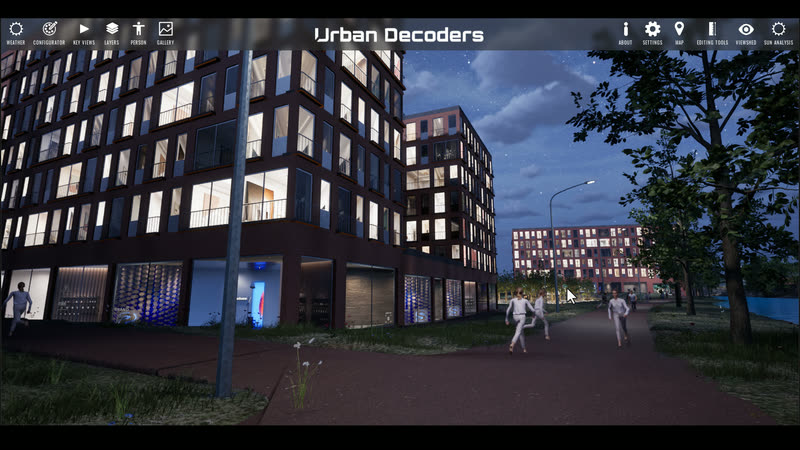
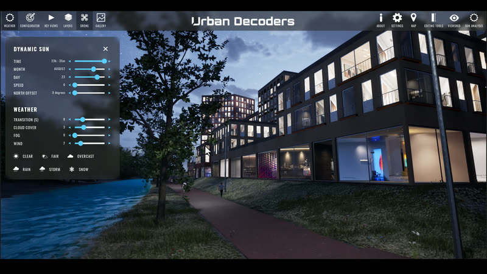
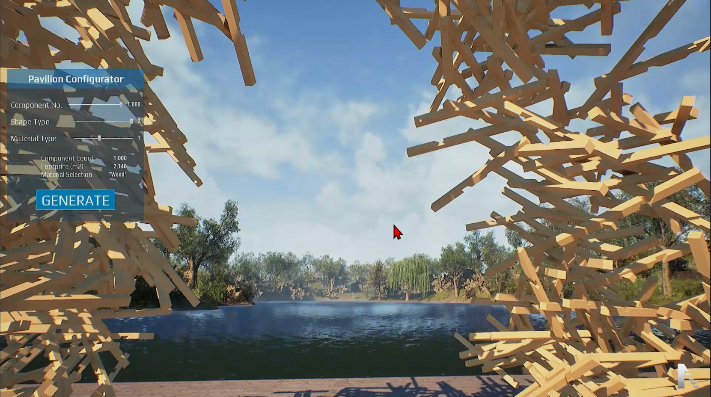
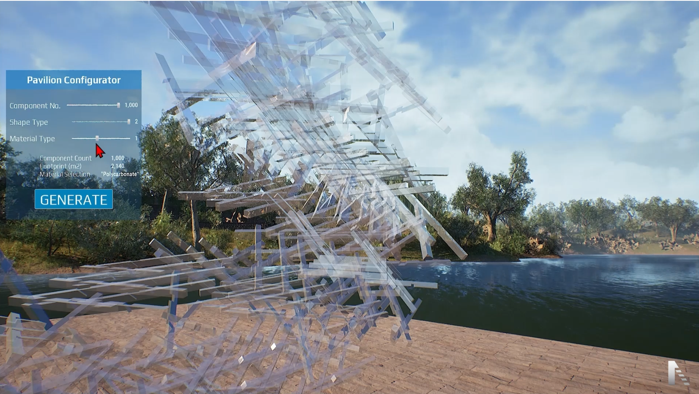
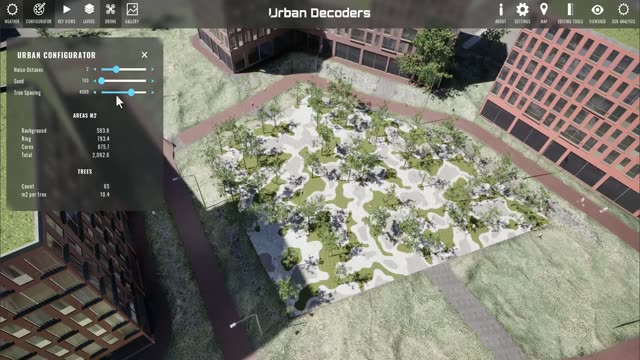

[ 01 / 03 ] 計画
マスタープランと開発容量を、実際の敷地で検討。
区画、街区、公共空間を、実際の座標に合わせた敷地の上に直接生成します。パラメータを動かすと、延床面積（GFA）、建蔽率、緑地率、住戸構成が再計算されます。容量検討は2週間ではなく、半日でできます。
敷地19,551 m² · FAR 1〜6を数秒で · Cesium 3D Tiles

Unreal Engine 5のデジタルツイン、インタラクティブなウェブサイト、360°バーチャルリアリティツアー、インタラクティブ・マッピング — 建築、不動産、都市計画のために。最初の敷地検討からまちびらきの日まで、GIS、BIM、都市のリアルタイムデータを、見て回れるひとつのモデルにまとめます。


私たちがつくるツインはすべて、同じ街区の上に、同じ6つのレイヤーを重ねます。敷地検討なら、3つで止めることもあります。都市ツインでは、6つすべてをリアルタイムで動かします。カードにカーソルを合わせると、持ち上がります。
Webビューアに標準で入っている20のツールです。ストックポート・イーストと東京のツインで収録しました。タイルにカーソルを合わせると再生します。すべてのツールが実際の座標に合わせた同じ基盤の上で動くため、計測値、影、バス路線がすべて一致します。






画面 ストックポート・イースト · GISレイヤー、日射、夜景 全編 · 1:39
区画、街区、公共空間を、実際の座標に合わせた敷地の上に直接生成します。パラメータを動かすと、延床面積（GFA）、建蔽率、緑地率、住戸構成が再計算されます。容量検討は2週間ではなく、半日でできます。
密度、高さ、フェーズ計画、採光、眺望、公共交通へのアクセスを、同じモデルの中で案どうし比べて検証します。委員会に持ち込むのは、イメージ画像ではなく比較結果です。
住民は自分の住む通りから計画案を見て回り、対象の場所に直接コメントをピン留めできます。自治体の担当者は、記録、主な論点、エクスポートデータを受け取れます。まちびらきの後は、同じツインが、その場所を運営するダッシュボードになります。

ツインを支える研究です。Arki Engineは、Unreal Engine上で動く私たちの設計プラットフォームです。Grasshopperのロジックが、リアルタイムでジオメトリを動かします。そのため、パラメータを変えると、パビリオンもタワーも地区全体も、面積表とともにつくり直されます。
ここにある検討ツールは、すべてGrasshopperの定義から始まりました。建築家がすでに信頼しているのと同じロジックで、リアルタイムのモデルが動きます。


755部材の集合体
パラメトリックなボリューム検討

データにもとづく区画レイアウト

リアルタイムのファサード検討

自動生成した構造

周辺環境 + ゾーニングのレイヤー

変更できる形状

素材の検討ツール
スクロールでギャラリーを回転

できること。ストックポート・イースト再生地区の、実際に動いているツインです。GISレイヤー、主要な眺望、太陽位置の設定と天候の切り替え、歩行者視点とドローン視点のウォークスルー、計測ツールと断面ツール、日射解析と眺望解析、POIデータと交通データ。すべてが、実際の座標に合わせたひとつの基盤の上にあります。
得られるもの。自治体の担当者、設計者、住民が、中を見て回り、問いかけられるモデルです。このサイトで紹介している機能は、すべてこのツインの中で収録しました。カーソルを合わせると、フライスルーを再生します。

できること。敷地面積、住戸構成、緑地率、街区のタイプを、スライダーでその場で変えられます。公園とその周りの街区が、ツインの中の実際の敷地の上で、直接つくり直されます。
得られるもの。ドラッグに合わせて、住戸数、商業テナント数、緑地率が再計算されます。表示している構成では、敷地1,200 m²、住宅25戸、商業テナント10件、緑地35%です。

できること。 PLATEAUの都市データとフォトグラメトリによる周辺環境から、東京都心を組み上げました。千代田区・中央区・港区の区界、土地利用、交通を同じ基盤に載せ、建物はそれぞれ元の属性情報を保持しています。太陽、天候、可視領域、日照時間の解析がその上で動きます。
得られるもの。 建物をクリックすると属性が開きます — 汐留シティセンター、コード 13103-bldg-21730、高さ225.8 m。カーソルを合わせると、都心を一日が流れていく映像が再生されます。
できること。 メタボリズムの3つのランドマークを、実際の敷地の上で動く定義として組み直しました。中銀カプセルタワー、静岡新聞・静岡放送東京支社ビル、タカラ・ビューティリオン。階数、コア、ウィング、カプセルの充填率や向きをスライダーで — あるいは普通の言葉で指示できます。
得られるもの。 カプセルタワーはカプセル177個・床面積1,421.1 m²、塔は61 mと49.8 m、ブリッジ3本と返します。20階にするよう頼めば、20秒ほどで解き直します。

奥行き、間口、容積率（FAR）、階高、駐車場、セットバック、緑地率をもとに、実際の敷地上に区画レイアウトを生成します。

階高、半径、階数、曲率、パネルの色を、スライダーでその場で変えられます。実際のウェストミンスターのスカイラインと見比べて判断します。
ボリューム、日照、日影、眺望を実際の敷地上で計算し、講評会でもクライアント会議でもコンペ提出でも通用するウォークスルーにします。
住戸・区画ブラウザ、360°ツアー、販売センターの画面を、すべて同じ計画案から生成。設計変更はそのすべてに反映されます。
計画、制約条件、まちのリアルタイムの状況を共有するモデルです。政策、事前協議、委員会のすべてが、同じ根拠を見られます。
開発容量、密度、フェーズ計画を、実際の敷地で数時間で検証できます。示すすべての案に、数値が付きます。
事業性の検討から、住民の意見募集、計画許可まで、計画案を一貫して扱えるツインです。計画が変わっても、常に最新の状態を保ちます。
交通軸、駅、港、ターミナルを、そのネットワークやリアルタイムデータとともにモデル化します。開業の何年も前から、リハーサルができます。
場所について学べる、ゲームエンジンのツールです。実際の都市データをもとに、学校向けプログラム、展示、研修をつくります。
ひとつの敷地検討から都市規模のプログラムまで、すべてのツインは同じ4つのステップで進みます。
GIS、BIM、測量、オープンデータ、リアルタイムデータなど、今あるものを確認します。そして、ツインが誰のために、何に答えるべきかを一緒に決めます。
地形、区画、ネットワーク、制約条件を整理し、実際の座標に合わせたひとつの基盤にまとめます。座標系（CRS）は明記します。以降のレイヤーは、すべてこの上に載ります。
基盤の上で案を生成し、リアルタイムデータを接続し、住民参加の仕組みを組み込みます。節目ごとに、お客様と一緒に確認します。
Web、メディアテーブル、またはヘッドセット。モデルをお渡しし、公開後も計画とリアルタイムデータに同期させ続けます。
GeoJSON、DXF、または敷地境界線（レッドライン）のPDFがあれば始められます。区分、スケジュール、意思決定に必要なレイヤーをお返しします。